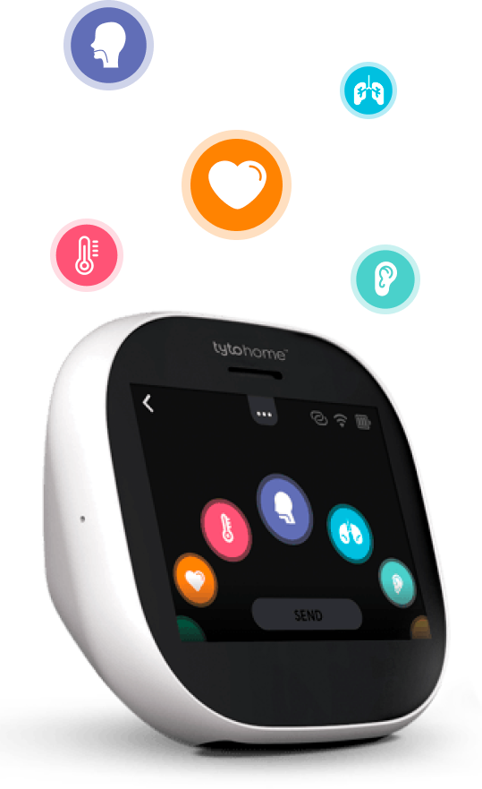
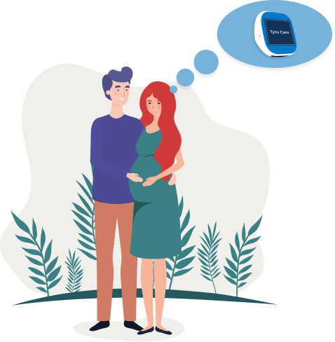
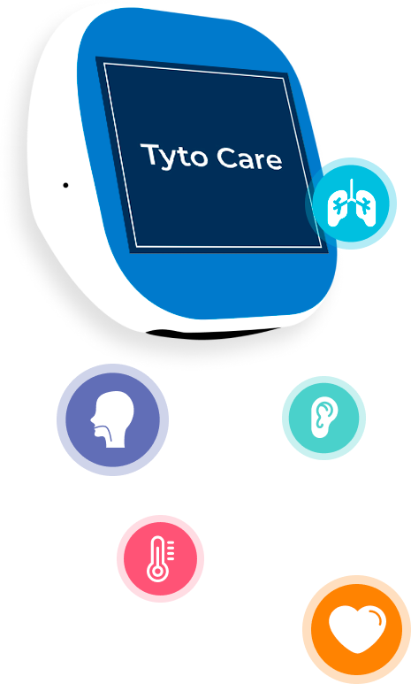

TELECONSULTA
Os benefícios da tecnologia e da teleconsulta
O objetivo do dispositivo é levar a você e sua família mais praticidade, segurança e rapidez no cuidado da saúde e bem-estar.
TYTOCARE
O que é TytoCare?
O TytoCare é uma solução que conecta o médico e o paciente através de um dispositivo tecnológico que permite a realização de exames na comodidade de sua casa ou no lugar de preferência com total segurança pela não exposição de sua família em um ambiente hospitalar.
Através da plataforma digital e do aplicativo, os atendimentos permitem diagnósticos precisos e prescrições totalmente seguras.
O dispositivo é fabricado pela startup Tyto e traz três acessórios com sensores, utilizados para checar temperatura, captar imagens e transmitir sons. Com acesso à internet, é possível realizar exames como ausculta cardíaca e do pulmão, aferição de temperatura, avaliação da garganta e dos ouvidos, dentre outros. O acessório possui também abaixador de língua, câmera dermatológica e outras funções, para atender o paciente como se estivesse em uma consulta presencial.
Durante a consulta você consegue conversar com o médico e conferir resultados de exames, já que as informações e imagens captadas pelo dispositivo e seus acessórios são enviadas em tempo real para o profissional, que orienta e conduz o uso do dispositivo durante o atendimento.

COMO USAR
Como utilizar?
As gestantes que estiverem inscritas no programa Mommy Care receberão, a partir da 35ª semana de gestação, o aparelho TytoCare para usufruir dessa tecnologia.
As beneficiárias serão orientadas pelas enfermeiras do programa sobre o uso, recursos e todo o manejo do equipamento.
A permanência com o dispositivo será de 4 meses (a partir da 35ª semana de gestação + os 3 primeiros meses do bebê). Ele será utilizado nas visitas já programadas durante o acompanhamento das mamães junto as enfermeiras obstetras, como forma de adaptação aos recursos. Caso haja necessidade de uma avaliação médica, o programa oferecerá uma consulta com nossos médicos parceiros em até 48 horas.
Além disso, todo o grupo familiar desta mamãe inscrita no programa poderá usufruir do dispositivo e realizar atendimentos com o apoio do TytoCare. Isto acontecerá através do suporte de nossa Rede Plus, uma rede credenciada de excelência, toda a família poderá se consultar via telemedicina com o uso dessa tecnologia.

PROGRAMA MOMMY CARE
Mommy Care
O TytoCare será disponibilizado para mães que recebem o acompanhamento no Programa Mommy Care e poderá ser controlado pelo paciente e pelo médico 100% de forma on-line.
Assim, o time de obstetras e enfermeiros obstétricos da Rede Plus, nossa rede exclusiva e parceira que acompanha as gestantes do programa, poderá ter acesso a mais informações durante a teleconsulta.
PROGRAMA MOMMY CARE
Sobre o programa Mommy Care
O Mommy Care oferece um acompanhamento personalizado das gestantes durante o período gravídico e puerperal através de contatos telefônicos, videoconferências e visitas presenciais, em determinadas regiões, ou consultas virtuais realizadas por enfermeiras obstétricas.
O objetivo é transmitir informações educativas sobre a evolução de cada trimestre da gestação e sobre o período pós-parto, identificar as gestantes de alto risco para acompanhar de perto toda a gestação e contribuir para que a gestante tenha a melhor assistência em saúde e redução das complicações perinatais.
Além disso, com ele, é possível oferecer suporte ao médico obstetra assistente, incentivar o parto a termo e a amamentação materna. E, ainda, transmitir dicas para as mamães sobre diversos assuntos, tais como: segurança do berço, extração e armazenamento do leite materno, cuidados com o recém-nascido, procedimentos realizados na maternidade, dentre outros.
Como se inscrever?
Clique aqui e acesse a página do programa Mommy Care, através do site ou do app da Care Plus e faça a sua inscrição.
Saber mais
CUIDADOS E DICAS
Cuidados e dicas gerais
O TytoCare oferece diagnósticos precisos e exames sem a necessidade de sair de casa. Durante a consulta você poderá cuidar da sua saúde e de sua família de forma ainda mais humanizada, pratica e segura.
Com três sensores superpotentes, o dispositivo checa a temperatura, capta as imagens em alta definição e transmite sons.
Além disso, você tem acesso a exames precisos, como ausculta cardíaca e do pulmão, análise de inflamações e da saúde da garganta, do ouvido, entre outras.
O acessório também possui depressor de língua e câmera dermatológica.
Com esta tecnologia, que será disponibilizada para mamães, através do programa Mommy Care, você poderá cuidar de sua saúde de forma ainda mais humanizada, prática e segura.

FAQ
TytoCare / Pacientes
TytoCare é um aparelho que permite realizar exames físicos e compartilhá-los com o médico em uma consulta à distância. Estes exames incluem sons do coração e pulmão, imagens em alta resolução dos ouvidos, garganta e pele, frequência cardíaca e temperatura. O médico poderá ver os resultados destes exames em tempo real e, assim, realizar um diagnóstico com precisão e segurança.
As gestantes que estiverem inscritas no programa Mommy Care receberão, no último mês de gravidez, o aparelho TytoCare para usufruir dessa modernidade. Todo o grupo familiar da mamãe inscrita no programa poderá usufruir do dispositivo e realizar atendimento com o apoio do TytoCare (estes atendimentos acontecerão através do suporte da Rede Plus, nossa rede credenciada de excelência).
A permanência com o dispositivo será por 4 meses (último mês de gestação + os 3 primeiros meses do bebê). Ele será utilizado nas visitas já programadas durante o acompanhamento das mamães junto as enfermeiras obstetras, como forma de adaptação aos recursos. Caso haja necessidade de uma avaliação médica, o programa oferecerá uma consulta com nossos médicos parceiros em até 48 horas.
Clique aqui e acesse a página do programa Mommy Care, através do site ou do app da Care Plus e faça a sua inscrição.
Os aparelhos da TytoCare disponibilizam vídeos de treinamento integrados ao seu sistema, para te ajudar a ter mais segurança durante a condução dos exames. Além disso, ao usar TytoCare em uma teleconsulta ao vivo, seu médico irá guiá-lo durante todo o processo de exame, permitindo que você saiba onde e como posicionar os instrumentos corretamente.
Para utilizar TytoCare é necessário um smartphone ou tablet com o aplicativo TytoCare instalado (disponível gratuitamente na Apple Store e Play Store) e uma conexão de internet estável.
Uma consulta utilizando o TytoCare fornece ao médico sons do coração e dos pulmões, imagens e vídeos digitais dos ouvidos, garganta e pele com alta resolução, além de medir a frequência cardíaca e a temperatura corpórea do paciente. Utilizando os dados do exame, seu médico pode chegar a um diagnóstico de forma segura e, se necessário, a um encaminhamento de tratamento e prescrição.
Os profissionais que farão o seu atendimento pela plataforma TytoCare são médicos d a rede Plus, altamente capacitados e treinados para o atendimento à distância. Médicos de fora dessa rede no momento não possuem acesso à plataforma para poderem realizar o atendimento.
TytoCare pode ajudar um profissional de saúde a diagnosticar muitas condições comuns de saúde, incluindo infecções de ouvido, dor de garganta, febre, resfriado, gripe, alergias, conjuntivite, náusea, constipação, asma, bronquite, infecções respiratórias superiores, picadas de insetos e doenças de pele comuns, incluindo dermatite de contato, erupção na pele e assaduras, dentre outras.
No momento a plataforma de atendimento de TytoCare pela Care Plus possui apenas pediatras em sua base, portanto será possível atender outras pessoas de sua família, desde que sejam crianças ou adolescentes.
Sim. Se uma receita for necessária, seu médico pode prescrever e enviá-la diretamente a você por uma plataforma desenvolvida para esta finalidade.